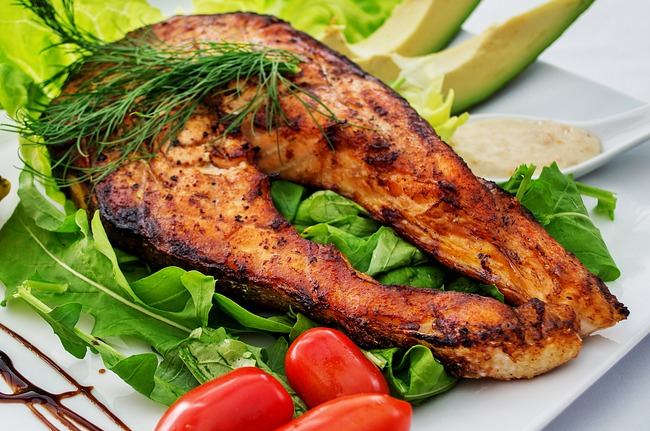

Omi Beef
近江牛を使った一皿
近江の地で育まれた近江牛を、ビストロらしい仕立てで味わっていただけます(内容・価格は仕入れ状況により異なります)。
八幡堀のほとり、近江八幡の小さなビストロです。
近江の畑や湖でとれたものと、フランス仕込みのビストロ料理が、ここで出会います。かしこまりすぎない一皿を、八幡堀のほど近くでどうぞ。
店名の「ミリュー(milieu)」は、フランス語で「環境」や「まんなか」を意味する言葉だと言われています。近江の実りと、フランスで培われたビストロの手仕事。その両方の"あいだ"に立つ店でありたいという思いから、この名前を選ばれたのではないかと感じています。気負わず、けれど丁寧に。そんな一皿を、近江八幡の地で大切にされているお店です。
近江の地で育まれた近江牛を、ビストロらしい仕立てで味わっていただけます(内容・価格は仕入れ状況により異なります)。

琵琶湖の幸をはじめ、湖国ならではの食材もお料理に取り入れられているようです。季節によって表情を変える一皿をお楽しみください。
「結婚記念日のランチでお邪魔しました。近江牛を使ったメインは見た目も華やかで、ソースの仕立てがとても丁寧な印象でした。店内は静かで落ち着いており、特別な日の食事にぴったりだと感じました。」
※イメージ例(創作口コミ・実際のお客様の声ではありません)